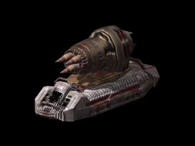

RM Hydra

In-game info panel
- Speed:
- 100 km/h
- Energy (HP):
- 225
- Sight range:
- 450 m
- Production time:
- 31 s
| Weapon | Power | Range | Targets |
|---|---|---|---|
| B22 Rocket | 70 | 5-14 | G |
Costs: Extract 1800 Iron 1200 Carbon 1200 Titanium 0
Description
A modernized version of our light rocket artillery, built around a new plasma drive, it is set to replace the older design. Its main advantage is a change in rocket propulsion, which led to a remarkable improvement in accuracy compared to the previous model. Used with success as a short-range unit shield, as well as for direct attack on enemy units and structures. Requires the backup of ground forces. Practically defenceless against short-range attacks, it also requires protection against air unit attacks.
Related
- Requires
- Mother, Heavy Factory, RM Hydra
- Researched by project
- RM Hydra
- Produced by
- Heavy Factory
- Transported by
- Dragorgon
- Weapons
- B22 Rocket (slot 0)
- Upgraded by
- Bio Servo
Config values not shown in game (8)
HUMAN- 2
TRACE- 1
AILEVEL- 1
TURN_SPEED- 0.016
AIUNIT- AIUNIT_ARTILERY
SOLDIER_TYPE- SOLDIERTYPE_UNKNOWN
INDEPENDENT- tylko w akcji
TYPE- R_aPOJAZD